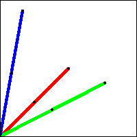

| How do the limiting points depend on the choice of (0.5, 0.5)
as starting point? Not at all. |
| This should be no surprise: recall the attractor of an IFS does not depend
on the initial picture. (This is a bit different than the situation at hand,
however, but certainly makes the result plausible.) |
| Here is an illustration.
We follow the sequences generated from three different starting points, all with
vertices selected in the order 121212... = (12)∞.
Blue lines for one starting
point, green for the second, red for the third. |
|
 |
| Click the picture to start the animation. |
|